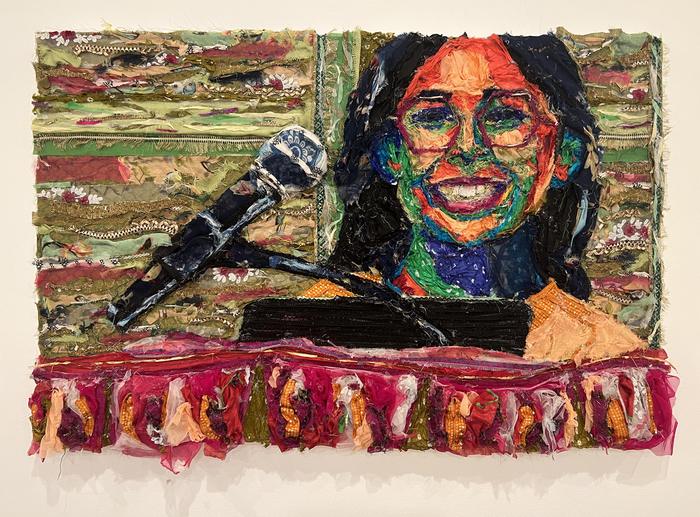

The intent in this piece is to honor the struggles and achievements of immigrants in America.
Their experiences and contributions crisscross and intertwine with those that came before to create
a dynamic and vibrant fabric. Standing together does not mean blending in; there is a need for diverse
individuals representing outstanding efforts and achievements to stand out! This piece is inspired by
the work of the artist Bisa Butler, who uses quilting to tell the stories of otherwise forgotten people.